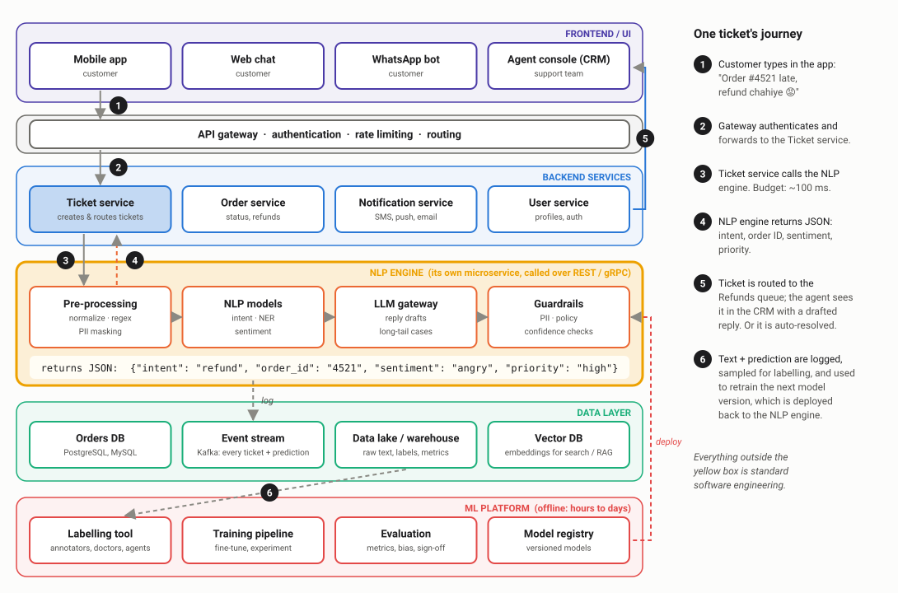
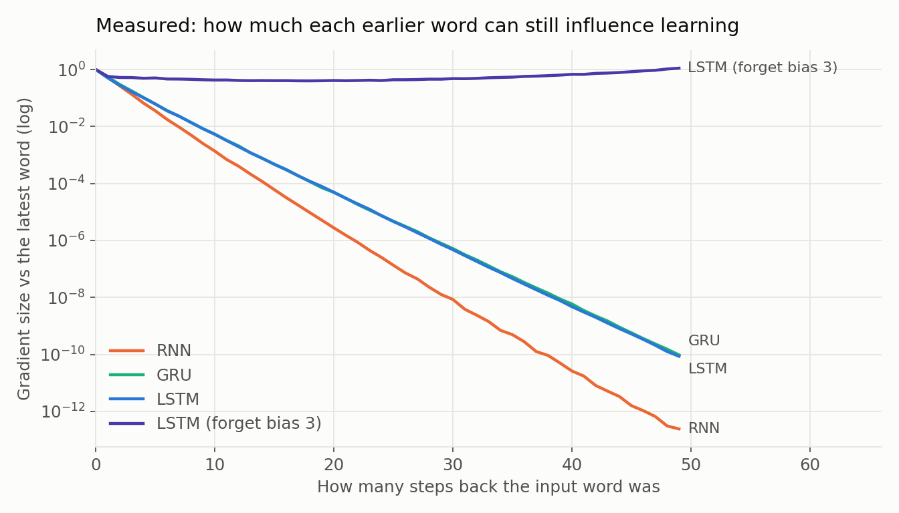
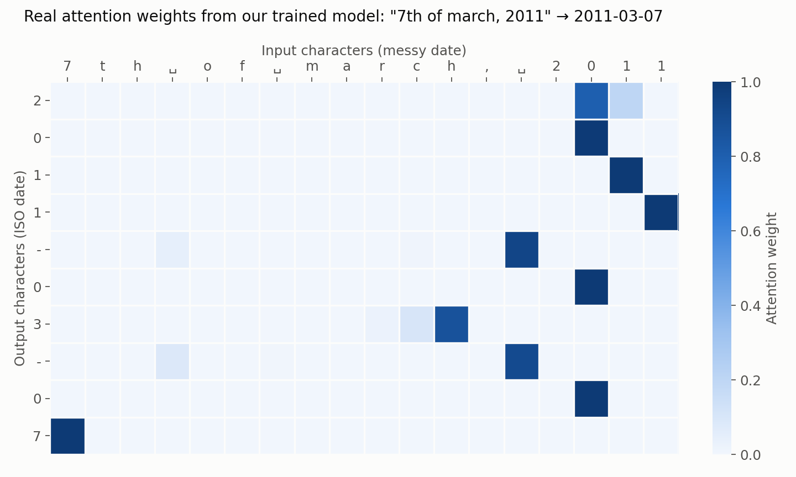

NLP in Practice
From bag-of-words to large language models — how Natural Language Processing is actually built, deployed and used in industry. Concepts explained through real products, real data and runnable code.
I'm a Principal AI Architect at Mastercard with over 10 years of experience building AI systems that operate at a scale most engineers only read about. My journey spans the full arc of modern AI — from writing Stanford NLP algorithms in Java to architecting cutting-edge Multi-Agent AI systems powering global financial infrastructure today.
At Mastercard, I've worn multiple hats — Lead ML Engineer, ML Engineering Manager, and now Principal AI Architect — where I design large-scale Agentic AI platforms, Responsible AI services, and oversee a large portfolio of predictive models running in production at global scale. I hold a Master's degree in Computer Applications.
"No matter how advanced AI gets, every production-ready solution will always stand or fall on the strength of its engineering foundation. Great AI is less about magic — and more about very clever plumbing."
Language Is the Interface to AI
Your syllabus covers tokenization, TF-IDF, word2vec, RNNs and Seq2Seq. It can feel like history when everyone is talking about ChatGPT. It is not. Every one of these ideas is still running in production today — inside search engines, spam filters, recommendation systems and, in evolved form, inside every large language model.
These notes connect each syllabus topic to how it is used in real products: what problem it solves, where it breaks, and what engineers actually do about it.
Every unit follows one real problem — a food-delivery app drowning in Hinglish support tickets — and every code output on these pages comes from actually running the code. Where the tools fail, the failure is shown, because that is where the real engineering lessons are.
Explain how text becomes numbers, build a working ticket classifier and a mini search engine, understand why embeddings made semantic search possible, and see how all of it leads to RNNs, Transformers and LLMs — with the industry context that turns textbook knowledge into interview-ready understanding.
Five Units, One Real Problem

How NLP evolved, how it fits inside AI, where it is used (including healthcare), and how messy text is cleaned, tokenized and tagged — plus where the NLP engine sits in a real product.

Turning text into numbers: bag of words, n-grams, TF-IDF, search indexing with Elasticsearch, a working ticket router, language models, smoothing and Naive Bayes.

How machines learned that "refund" and "money back" mean the same thing: word2vec, GloVe, fastText, window classification, backpropagation, dependency parsing and semantic search.

Models that read in order and remember: RNN language models, measured vanishing gradients, LSTMs and GRUs, a dish-name generator, CNNs for text — and why the TF-IDF baseline still won.

Seq2Seq and attention (trained live: 67.6% → 100%), BLEU and its limits, Transformers, BERT, LaMDA and GPT, conversational AI with RAG, and the research papers that shaped it all.
Run Everything Yourself
Create a new notebook and install everything used across the course. Each unit page also starts with its own setup cell.
!pip install spacy nltk gensim scikit-learn pandas numpy torch transformers sentencepiece !python -m spacy download en_core_web_sm
support_tickets.csv: 120 synthetic support tickets in four queues, with Hinglish and typos (Units 2–4). dishes.txt: 195 Indian dish names for the Unit 4 text generator.
Every code block has a copy button and shows its real output. Each unit ends with experiments and discussion questions — change the inputs and see where the models fail.
Where You Go From Here
- Build the ticket router on your own data
Take the Unit 2 TF-IDF classifier and train it on something from your own world — college notices, product reviews, WhatsApp group messages. Then add the Unit 3 semantic search on top. That is a real, explainable NLP project for your resume.
- Always build the baseline first
Before reaching for BERT or an LLM, measure what TF-IDF + logistic regression can do. Industry teams do exactly this, and interviewers love candidates who can justify a model choice with numbers.
- Read one engineering blog post per week
Search, recommendation and NLP teams at companies like Airbnb, Uber, LinkedIn and Swiggy publish how they build real systems. One post a week, and you will think differently from every other candidate.
Every modern LLM still starts with tokens, still learns from context, and still predicts the next word. The fundamentals in these notes are not history — they are the foundation.